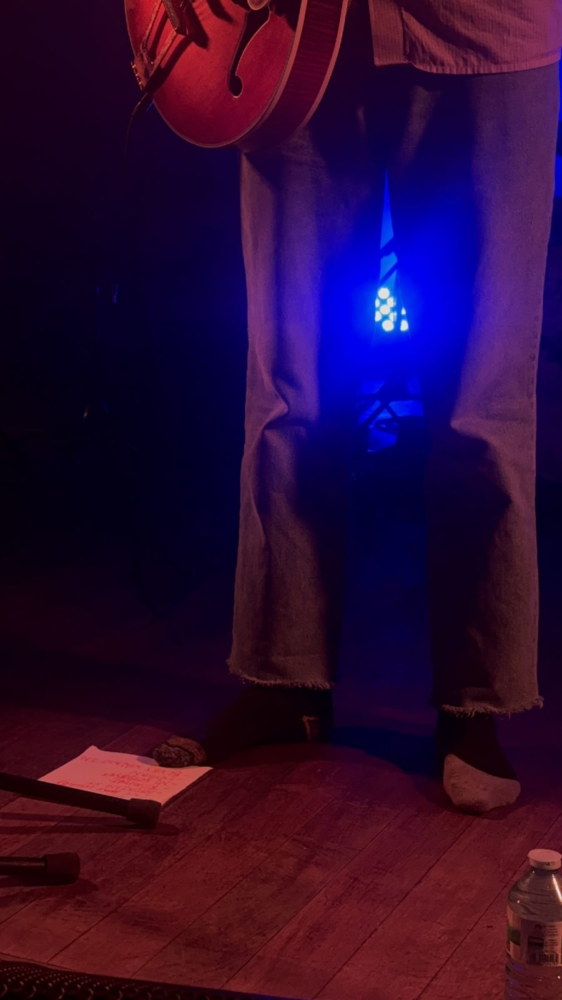

review of mary in the junkyard at la bellevilloise, Paris
On Monday, a 15 year-old highschooler in France got his hand and forearm ripped off by a grenade launched by the police during the current protests organized by students taking place all over the country.
My friend and I looked at each other that night, no longer capable. I held her and she held me, we were full of vertigo and maybe nauseated.
A silence took over the room when a long figure arrived on the stage. He had a flatcap and his shirt was buttoned all the way up. He was holding a semi-hollow guitar and was standing very straight, his legs were deeply anchored into the ground. No shoes, just his anthracite socks. It made me think of a tale I used to listen to as a kid called the Soldat Rose, The Pink Soldier in English. It’s not really the story that resonated, more so he was how I used to imagine him. Standing straight undisciplinarily.
What followed I have many comparisons for, but not many I want to mention. It was like opening a music box, where a frail melody came out. The sort of frailness that takes you in. I couldn’t tell you if his set lasted ten minutes or an hour. All around me I saw spellbound faces. The name of the pink soldier in the music box : Everett Dolphin. He told me he might put out music next week for the first time.
Later, small white wings appear on stage. They’re attached to Clari, lead singer of Mary in the Junkyard. She wears her boots for approximately 3 minutes before taking them off. She too has grey socks. Saya is wearing boxing boots, particularly fit when they perform New Muscles and Clari and her launch a fight. Saya pulls out her viola bow, Clari pulls out her guitar, and David, of course, stirs the drums to pace the confrontation. They laugh a lot and it trickles everywhere.
During the show their wings grew bigger. Saya and Clari played new material where their voices answer to each other as birds do in the forest. Every guitar riff, every smile, I promise, I saw it, white wings pulling out of their backs. New muscles perhaps…
That night, Everett and Mary in the Junkyard took us in and out of the world, and I think this is what is achieved only by purity. We didn’t want to escape; truly we couldn’t. We wanted a beauty that is very much inside the world. Their instinctual stage presence and authentic lack of curation welcomed grief as a continuous presence. They weren’t with us, they weren’t between themselves either, they created this space in between where we all met. A ceremony for us all to be there and sit with rage, sadness and joy.

go and listen to mary in the junkyard